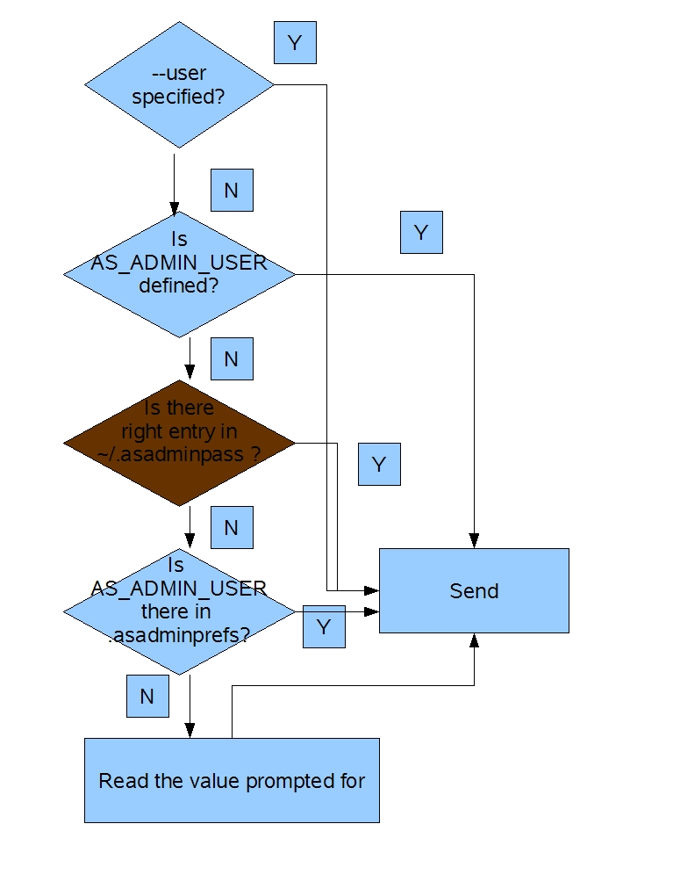
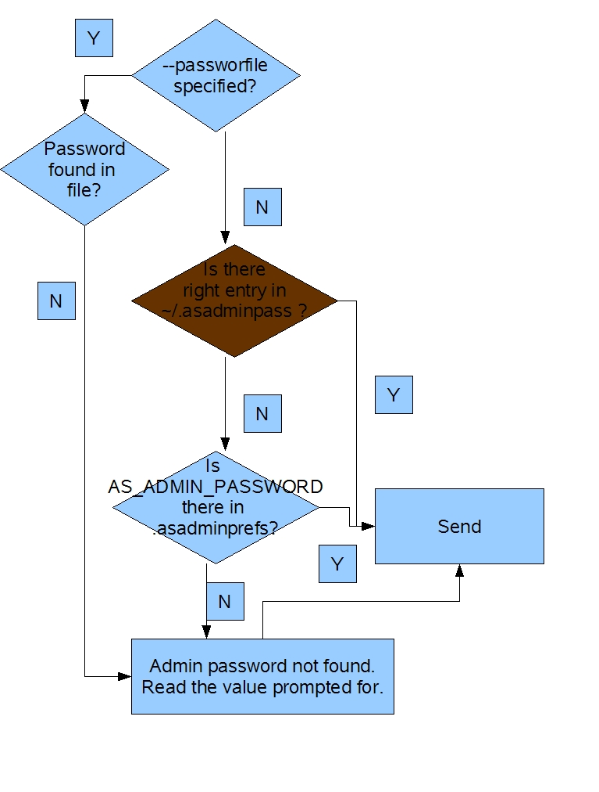

Asarch Reviewed and Approved |
Kedar Mhaswade |
0.95 |
Document Created |
Kedar Mhaswade |
0.5 |
This document describes the details of changes required to be done in and around Appserver software in order to implement Sun's security policy about reusable passwords in command lines. Appserver versions affected by this proposed change are GlassFish, Sun's Appserver PE/EE 9.0. Basic familiarity of readers with Sun's Appserver is assumed. The policy mandates that all programs distributed by Sun strictly follow the following:
Following terminology applies.
| Terms, Synonyms | Meaning, Details |
| Reusable Password | A password string that can be used successfully more than once. This differs from one time passwords. The appserver's admin password is an example of a reusable password. |
| admin, administrative | The term "admin" is used to mean administrative throughout this document. |
| Appserver | A generic term that applies to GlassFish, Sun's Appserver 9.0 PE and EE alike, unless specified otherwise. |
| asadmin | The name given to Appserver's Command Line Interface. |
| Password | When used this way, it means the admin password for Appserver domains, unless specified otherwise. Note that until Appserver 8.2, every asadmin invocation needs an admin password to perform any remote operation on a given domain. There are other passwords as well, which should not be confused with this password. |
| Remote command | Any asadmin command that depends on making a connection to Domain Admin Server running locally or elsewhere to do any admin task. An example is "deploy". Thus, "remote" is really a misnomer because the asadmin command may not be invoked on a remote machine. About 95% of the asadmin commands are Remote Commands. |
| Local command | Any asadmin command that does not depend on Domain Admin Server and performs an admin task locally. An example is: "create-domain". About 5% of the asadmin commands are Local Commands. |
Following requirements drive this proposal:
Here is a summary of changes to expect if the proposal is implemented. It is necessary to go through the details when in doubt.
In order to enhance the usability of create-domain command for its immediate administration, create-domain command will provide a new option called --savelogin. This, in addition to creating the domain will save the admin user name and password, will save the admin user name and password. This improves the usability of any domain that is created by user and is not limited to just the default domain that is created during installation. The default value of this option is false. This is how the create-domain command changes, when this (Boolean) option is used. (When the option is not used, the behavior of create-domain is unchanged).
|
$>asadmin create-domain
--adminport 8888 --savelogin mydomain Please enter the
admin user name for this domain: administrator Domain [mydomain]
was created successfully. |
It is important to note the following:
This provision improves the user experience of a domain that is created and administered locally. This is because if the user has specified default admin port while creating the domain, there is no need to specify --user, --passwordfile, --host, --port on any of the subsequent asadmin Remote Commands. These values will be automatically obtained.
It is important to note that when the same user creates multiple domains having same admin port number using this option on the same or different machines (where the home directory is NFS mounted), the command is NOT going to prompt whether the admin-password should be overwritten. It will always be overwritten. The reason being the possibility of this command to be run in a batch mode.
Note that "asadmin delete-domain" command will remove the entry corresponding to "localhost" and its "admin-port" obtained from the domain.xml.One of the strengths of asadmin interface is that it simulates an administration console. Thus, if various Appserver domains are created on various machines (locally), asadmin invocation from any of these machines can manage the domains located elsewhere (remotely). This comes in handy especially when a particular machine is chosen as an administration client and it manages multiple domains and servers therein. To ease the administration of such remote domains (just like the above provision does it for local domains), a new command is proposed here: "asadmin login". This is only an interactive command. It can not be run (easily) using script. Following is the behavior of this command:
|
$>asadmin login --host admin-host --port admin-port The admin user name and password will be saved in [/home/Joe/.asadminpass] for this domain, with host [admin-host] and admin-port [admin-port]. Do you want to continue (y/n)? y Please enter the
admin user name for this domain: administrator (Assuming the login to the remote server succeeded) The admin user name and encoded password is saved in [/home/Joe/.asadminpass]. Make sure that this file remains protected. If admin user name and password is not specified otherwise, asadmin will use the information stored in this file to administer this domain [host: admin-host, port: admin-port]. |
Following should be noted in relation to asadmin login:
Again, note that while using "asadmin login" with host specified as "localhost" for multiple domains and same port number, the command will prompt whether the user wants to overwrite the previous entry.
The following is the format of ".asadminpass" file:
| #Please
don't modify this file by hand. Use "asadmin login" command instead. # asadmin://admin%20user@host:port-uri-encoded encoded-admin-password ... |
Note that a space (' ') is used as a field delimiter.
Here is how admin user and admin password determined (obtained) by asadmin.
Admin User

Admin Password

Following are the additional changes to asadmin:
Introduction
Requirements
Summary of Changes
Details
$Id: remove--password.html,v 1.3 2006/01/25 07:28:58 kedar Exp $
$Author: kedar $